Popular Types of Pasta
Below is a collection of popular pasta varieties grouped by their shape and category. Use the search box or category filter to find a specific pasta.
No matching pasta types found.
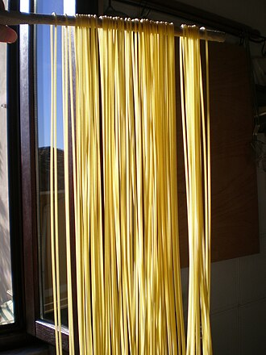
Long PastaSpaghetti
Long, thin, solid round strands of pasta. Works well with simple tomato, oil, or meat sauces.
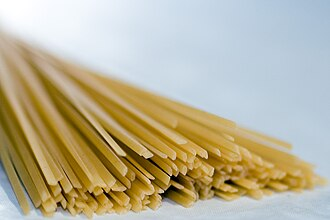
Long PastaLinguine
Long ribbons that are slightly flattened like "little tongues". Often served with pesto or seafood.
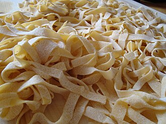
Long PastaFettuccine
Flat, thick ribbon pasta popular in Roman cuisine. Famous for being paired with creamy Alfredo sauce.
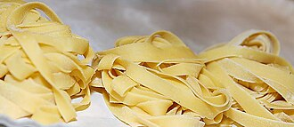
Long PastaTagliatelle
Long, flat ribbons from Emilia-Romagna usually made with egg dough and served with Bolognese sauce.
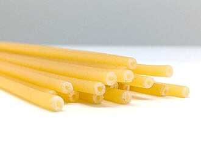
Long PastaBucatini
Thick spaghetti-like pasta with a tiny hole running through the center of each strand.
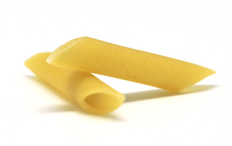
Short PastaPenne
Short cylinder pieces with angled ends and ridges that trap chunky vegetable and tomato sauces.
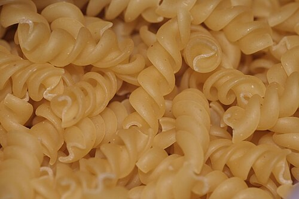
Short PastaFusilli
Corkscrew or spiral-shaped short pasta. The twists hold onto pesto, herb sauces, and salad dressings.
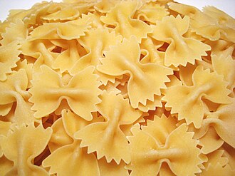
Short PastaFarfalle
Commonly called bow-tie or butterfly pasta. Great for light cream sauces and cold pasta salads.
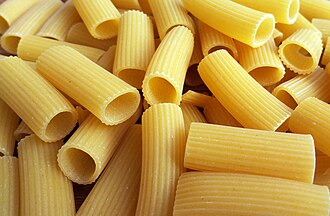
Short PastaRigatoni
Wide, ribbed short pasta pieces with flat-cut ends. Ideal for heavy meat sauces and baked pasta dishes.
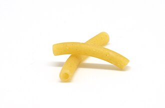
Short PastaMacaroni
Small curved elbow tubes. Most famously used for making baked macaroni and cheese or soups.
 Stuffed Pasta
Stuffed Pasta
Ravioli
Two thin layers of pasta dough sealed around a filling of ricotta cheese, spinach, or minced meat.
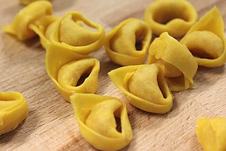
Stuffed PastaTortellini
Ring-shaped pasta parcels stuffed with cheese or meat, traditionally served in warm broth or cream sauce.
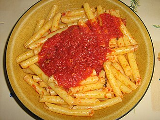
Tube PastaZiti
Smooth, medium-wide hollow tubes often broken into smaller tubes and baked with mozzarella and tomato sauce.
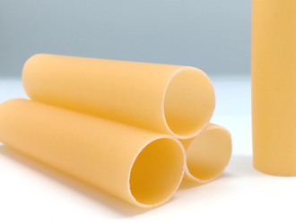
Tube PastaCannelloni
Large cylindrical pasta tubes designed to be stuffed with spinach and ricotta, covered in sauce, and baked.
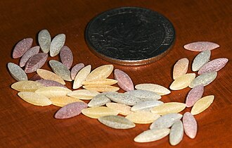
Soup PastaOrzo
Tiny pasta shaped like grains of rice. Commonly added to vegetable soups, broths, and light salads.
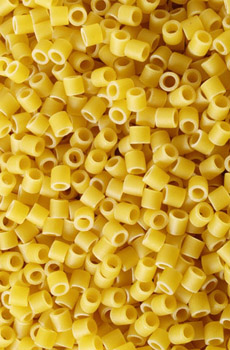
Soup PastaDitalini
Very short tube pasta shaped like little thimbles. Popular in traditional Italian minestrone soup.